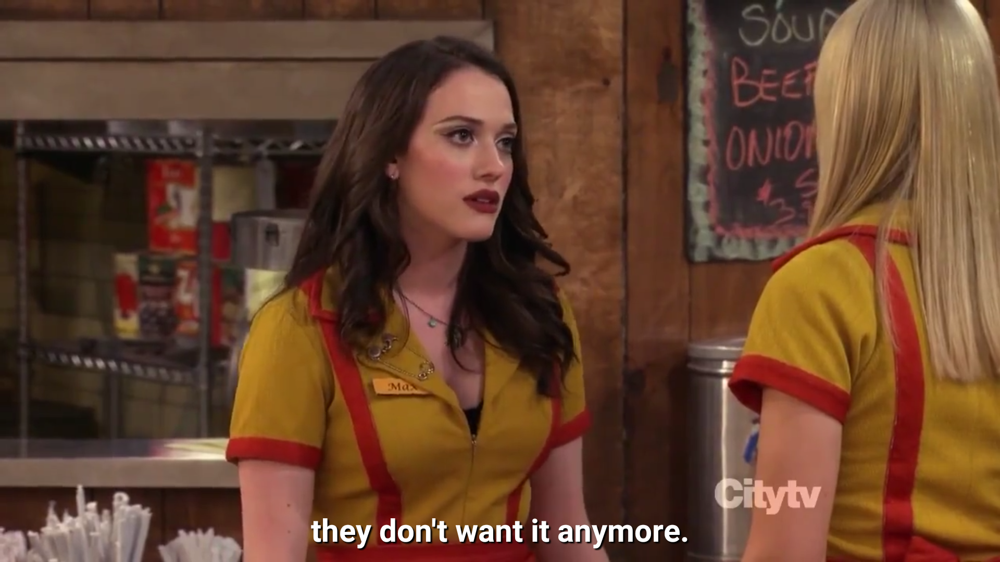

typical-ME
I've always wondered why it was always the same to have the want for something that you can't get and when you have it, you might not have that want anymore.
I've been through that shit, a lot recently. And I've also felt the same on watching some "TV SHOWS" you know, some kept the eager to watch it with that "want" to see something happen but when it happened, It was never like I wanted and thought it might be.
Cliché isn't it?
It's only till that juice that pops out of squeezed lemon and not after.


Max, from 2BrokeGirls, got that right!